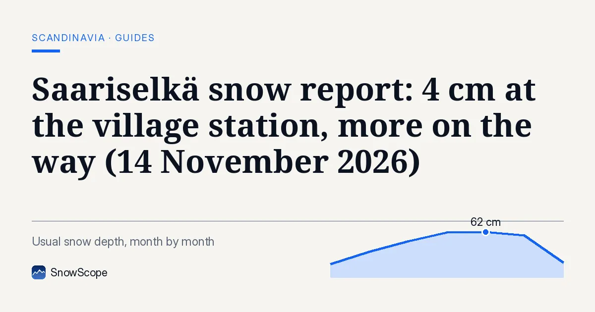

Saariselkä snow report: 4 cm at the village station, more on the way (14 November 2026)
On the morning of 13 November, the weather station at Inari Saariselkä matkailukeskus, 2 km from the slopes at 304 m, recorded 4 cm of snow. The depth has stayed steady for five days, frozen in place by the cold but not growing. Within seven days, SnowScope shows about 22 cm is on the way.
See the live snow forecast for Ski Saariselkä in the SnowScope appSnow depth, powder alerts and the 3D map, free.

What the stations show now
The official station in the village has held at 4 cm since 9 November. Each morning the same number; each night cold enough to lock it in place. That stability is good news: the layer will not vanish on a warm day. It is not yet a base, but it marks the start of winter.
Nearby stations tell a patchy story. Raja-Jooseppi, 35 km east at 186 m, has 6 cm. Vuotso, 40 km south at 250 m, still shows 0 cm. Pokka, 74 km southwest at 276 m, also 0 cm. Early season snow often falls in one valley and misses another; Saariselkä is in a pocket that has begun to fill.

The week ahead
About 5 cm will fall in the next 24 hours, then another 5 to 6 cm in the following day. By the end of this week, SnowScope shows a total of around 22 cm new snow. Snow will fall at all heights; no rain is expected even down to the lakes. The range of other forecasts is wider—up to 25 to 45 cm—but all agree on snow, all the way.
The snow line stays well below the village throughout. Early-season snow often sits loose on what lay beneath; each new layer will help glue the base together. By the end of the week, the village station should read in the mid-20s, still thin but far closer to what the season needs.
November's pattern
Across the 46 past winters in this region, 14 November is not a deep day. The usual depth on that date is 17 cm. By 21 November it rises to 22 cm, by the last day of the month to 27 cm. The real accumulation begins in December, when the sun barely rises and the cold is unbroken.
A typical winter here peaks around 70 cm, often in March. The ground stays white for about 212 days. The trend across decades is flat: the first 15 winters in the record averaged 74 cm at the peak, the last 15 averaged 70 cm. Early snow is thin, mid-winter snow is reliable.
What 4 cm means on the fell
At the base of the ski hill, 4 cm covers moss and low grass but leaves boulders bare. The 171 m of vertical takes you up 171 m where the snow is a touch deeper and firmer because of the exposure. Skiing on a base this thin means knowing the ground beneath; rocks close to the surface are a real risk.
Above the village, the main tracks in Urho Kekkonen National Park are walkable in winter boots this weekend. The thin snow is enough to feel like winter, not enough to need skis. After this week's forecast falls, cross-country skiers will find the first prepared loops around the resort.
When to expect the opening
Ski Saariselkä has set 21 November 2026 as its opening target, with daily runs planned until 20 December. The mapped terrain is modest: 9 km of runs and 2 lifts, one for each part of the fell. A resort this size can make efficient use of every centimetre of natural snow that falls.
The forecast for this week puts opening day on a foundation of around 20 to 25 cm by the base. That is thinner than past winters in mid-November but enough for a small hill with active grooming. Watch the daily update here on SnowScope and the resort's own site for confirmation.
Light and cold
At 68° north, 14 November marks the slide toward polar night. The sun rises mid-morning and sets by mid-afternoon; daylight is the main factor that shapes when you can ski, not the snow depth. Bring a headlamp for any afternoon outing.
The air temperature stays well below freezing night and day. The 2 to 3 cm that fell over the past week never thawed; the forecast snow will not either. That reliability is Saariselkä's strength in early season: once the snow arrives, it stays.
Tips for skiers
- Check the official avalanche bulletin from EAWS before any touring or off-piste skiing in Urho Kekkonen National Park, which starts at the village edge.
- On thin early-season snow like this, probe the base carefully if you leave the groomed runs; rocks under 4 cm are a real hazard.
- After this week's snowfall, expect the first cross-country loops to be tracked around the village. The resort website will announce prepared trails.
- Polar night is arriving fast; plan outings for the brief daylight window, roughly 10 a.m. to 2 p.m. by late November.
- If you are planning a trip for late November, bring layers for –15 to –20 °C: at this latitude, the cold will be steady once the season starts.
About these numbers
Resort snow depths are the deepest snow on the resort's upper slopes on the date shown; they are estimates for an area, not a measurement at one point. Forecasts can change. Always read the official avalanche bulletin before going off-piste.
Official avalanche bulletins: EAWS – European Avalanche Warning Services
Cite this report
For research, teaching or the press: the numbers and charts are free to reuse under CC BY 4.0 with this citation.
SnowScope (2026), Saariselkä snow report: 4 cm at the village station, more on the way (14 November 2026), https://snowscope.app/blog/en/2026/11/saariselka-snow-report-14-november-2026.html, accessed 2026-11-14
SnowScope (Atlas Labs). (2026, November 14). Saariselkä snow report: 4 cm at the village station, more on the way (14 November 2026). SnowScope snow reports. https://snowscope.app/blog/en/2026/11/saariselka-snow-report-14-november-2026.html
BibTeX
@misc{snowscope2026saariselkasnowreport14no,
author = {{SnowScope (Atlas Labs)}},
title = {Saariselkä snow report: 4 cm at the village station, more on the way (14 November 2026)},
year = {2026},
month = nov,
howpublished = {\url{https://snowscope.app/blog/en/2026/11/saariselka-snow-report-14-november-2026.html}},
note = {Published 2026-11-14 17:09 UTC; accessed 2026-11-14}
}· CC BY 4.0 · Methods, data and tools →
Ski Saariselkä: snow and temperature by height, this winter vs last (tools) →
Follow Ski Saariselkä
Free: a message when fresh snow is coming, and the forecast every morning.
More snow reports

Bergen city is snow-free on 13 November, but Kvamskogen 35 km inland has 5 cm. Heavy rain arrives Sunday with little chance of snow.

On 13 November 2026 the weather stations in Stockholm and Helsinki measured 0 cm of snow while Sälen had 45 cm and Umeå 20 cm. Height, the sea, the city and the track of the storms explain it, with numbers from 46 past winters.

Trondheim's weekend brings rain and mild air, not snow. Inland snow sits 5–18 cm deep, but Bymarka trails are wet. Know the year-round leash rules before you walk.